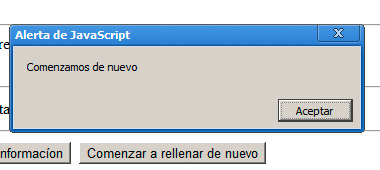

Actividad 1. Formularios
Generaremos un pequeño formulario para ir probando los diferentes tipos de campos que se pueden añadir. En el parámetro action optaremos por una acción de envío por correo electrónico, para así poder comprobar los valores que se mandan en cada correo.
Actividad 2. Campos de un formulario
Incorporaremos a nuestro formulario diferentes tipos de campos. Intentaremos que sean lo más variados posibles.
Actividad 3. Insertar un formulario con un editor web
Diseñaremos un formulario con un editor web que incluya al menos 6 tipos de campos diferentes. Para hacer las pruebas, podemos crearlo con una acción de tipo mailto. Así podremos comprobar qué resultados se envían al componer el correo electrónico.
Actividad 4. Eventos
Probaremos a realizar una pequeña gestión de eventos, de tal modo que, cuando un usuario haga clic en el botón de limpieza del formulario, se le muestre un aviso con cualquier texto, como se recoge en la figura. Ya hemos visto todo lo necesario para conseguirlo. Como pista, la única parte que debemos deducir es dónde ubicaremos la gestión del evento, si en el botón de reset o en la etiqueta del formulario. Al ser un evento que afecta a todo el formulario, debe ser en la etiqueta de formulario, pero podemos probar en ambos sitios para asegurarnos.

Actividad 5. Eventos
Probaremos a realizar un evento que muestre un aviso cada vez que se hace doble clic sobre una imagen. Observaremos la diferencia al colocar ese mismo evento en la etiqueta <body> o en algún <div> que ocupe parte de la pantalla.
Ejemplos
Las diferentes prácticas, recursos y ejemplos realizadas en este módulo están disponibles para realizar pruebas.
Ejemplos del módulo